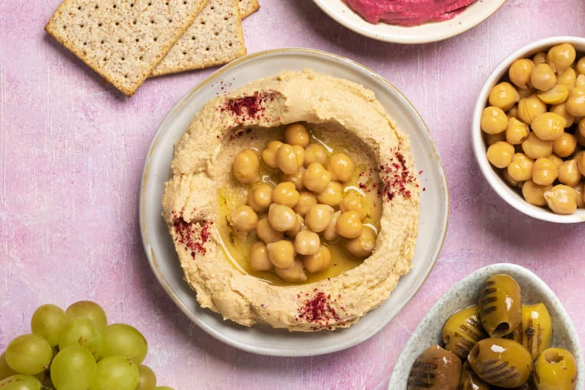
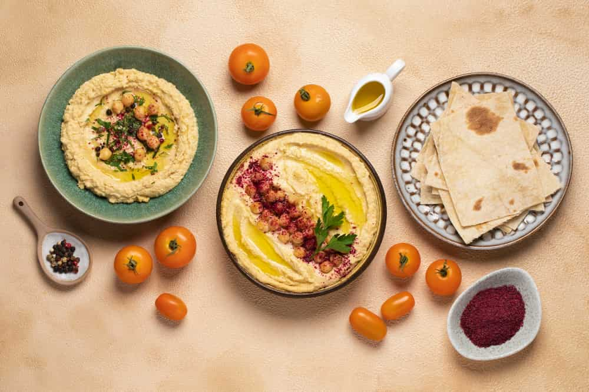

Girizgah
Zeytinyağı, tahin ve taze sıkılmış limon suyunun da katkılarıyla haşlanmış nohuttan hazırlanan en güzel mezelerin başında gelir humus tarifi. Tarifte yer alan diğer malzemelerle kıvam kazanan humus, kimyon ve sarımsakla çeşnilenir. Kabukları tek tek ayıklanan nohutlar, eski usul havanda dövülerek ya da blender yardımıyla karıştırılarak krema kıvamına getirilir. Pastırmalı da hazırlanabilen humus, toz kırmızı biberli kızgın yağla servis edilir. Kızarmış ekmek dilimleri üzerine sürülebildiği gibi bir atıştırmalık ya da dip sos olarak mısır cipsleri eşliğinde ikram edilebilir.
Humur İçin Gerekli Malzemeler
- 2 su bardağı nohut(250 g)
- 1 tatlı kaşığı karbonat(arzuya göre)
- 2 diş sarımsak
- 2 adet limon
- 1/2 su bardağı tahin(90-100 ml)
- 1/2 çay bardağı zeytinyağı
- 1 tatlı kaşığı kimyon
- 1,5 çay kaşığı tuz
- 1 yemek kaşığı zeytinyağı
- 1 çay kaşığı toz kırmızı biber
- 1 yemek kaşığı nohut
Üzeri İçin:

Humus Nasıl Yapılır?
1. Nohutları 1 gece veya en az 4-5 saat öncesinden ıslatın. Sindirimi kolaylaştırması ve daha kolay pişmesi için suyuna 1 tatlı kaşığı karbonat ekleyin. Ertesi gün suyunu süzün ve tekrar sudan geçirin.
2. Nohutları tencereye alıp üzerine su ekleyin ve pişmeye bırakın. Normal bir çelik tencerede 45 dakika kadar pişecektir. Nohutlar iyice yumuşadıktan sonra ocaktan alın. 1-2 yemek kaşığı kadar humus üzerinde servis etmek üzere ayırın.
3. Bu sırada tahin, zeytinyağı, kimyon ve tuzu bir kaseye alın. Limonların suyunu da ekleyin. Son olarak sarımsakları ince ince kıyıp onları da ekleyin ve güzelce karıştırın.
4. Haşladıktan sonra suyunu süzdüğünü nohutları hazırladığınız tahinli karışımla mutfak robotunda pürüzsüz kıvam alıncaya dek çekin. Eğer mutfak robotu zorlanıyorsa, azar azar zeytinyağı veya su ilave ederek dilediğiniz kıvama ulaşmasını sağlayın.
5. Ardından servis tabağına alarak tatlı kaşığıyla ortasına bir yuvarlak çizin.
6. Kenara ayırdığınız 1-2 yemek kaşığı nohutu üzerine serpiştirin.
7. Son olarak zeytinyağını gezdirip toz biber serpin ve servis edin. Afiyet olsun!
